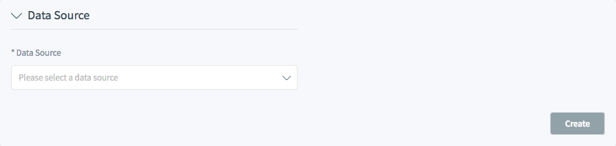
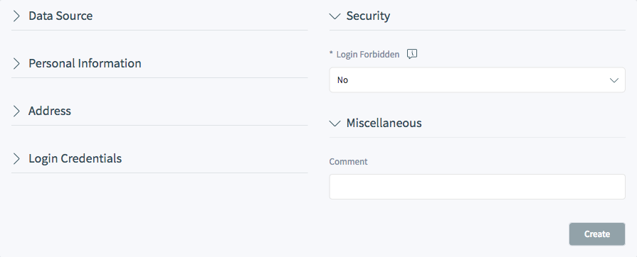
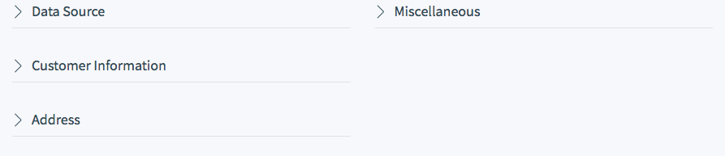
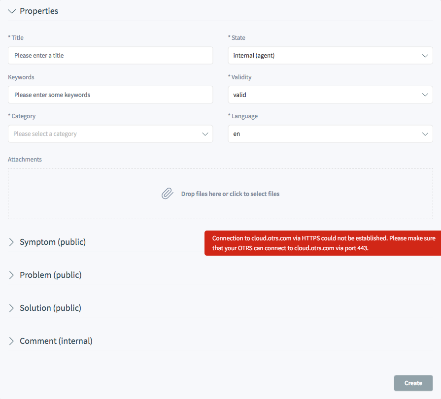

Create Objects¶
Add Customer User¶
To add a customer user:
- Choose a data source

Select Data Source
- Fill in the required fields.
- Click on the Save button.

Add Customer User
- Data Source
- TODO
- Personal Information
- Title or salutation
- Some name prefix can be added here like Mr., Dr., Jr., etc.
- Firstname
- The first name of the customer user.
- Lastname
- The last name of the customer user.
- The email address of the customer user.
- CustomerID
- The customerID of the customer company.
- Password
- The password of the customer user. This will be auto-generated if left empty.
- Phone
- The phone number of the customer user.
- Fax
- The fax number of the customer user.
- Mobile
- The cellphone number of the customer user.
- Customer
- Street
- The street name of the customer.
- Zip
- The zip code of the customer.
- City
- The headquarter city of the customer.
- Country
- The country of the customer user.
- Login Credentials
- Username
- The username of the customer user.
- Password
- The password of the customer user.
- Valid
- Sets the validity of this resource. Each resource can be used in OTRS only, if this field is set to valid. Setting this field to invalid or invalid-temporarily will disable the use of the resource.
- Security
- Login forbidden
- TODO
- Miscellaneous
- Comment
- Adds additional information to this resource. The comment is also displayed in the overview table.
Add Customer¶
To add a customer user:
- Choose a data source
Select Data Source
- Fill in the required fields.
- Click on the Save button.

Create Customer
- Data Source
- TODO
- Customer Information
Customer
CustomerID
Valid
- Address
Street
ZIP
City
Country
- Miscellaneous
URL
Comment
Create Ticket¶
- Phone Ticket
- Email Ticket
- SMS Ticket
- Process Ticket
Create Appointment¶
TODO
Create Knowledge Base Article¶

Create Knowledge Base Article
- Properties
In this section the following options can be set.
- Title
- The name of this resource. Any type of characters can be entered to this field including uppercase letters and spaces. The name will be displayed in the overview table.
- Keywords
- Add some keywords to make it easily to find the knowledge base article.
- Category
- Select a category from the available categories.
- Attachments
- It is possible to add attachments to the knowledge base article. Click on the field to add an attachment, or just drop some files here.
- State
- External (customer): The knowledge base article is visible for agents and logged in customer users on the external interface.
- Internal (agent): The knowledge base article is visible for agents only.
- Public (all): The knowledge base article is visible at the public interface.
- Validity
- Sets the validity of this resource. Each resource can be used in OTRS only, if this field is set to valid. Setting this field to invalid or invalid-temporarily will disable the use of the resource.
- Language
- Select a language from the available languages.
- Symptom (public)
- This field can be used to describe a symptom.
- Problem (public)
- This field can be used to describe a problem.
- Solution (public)
- This field can be used to describe the solution for a problem.
- Comment (internal)
- This field can be used to create a comment for the knowledge base article. The comment is only visible agents.